6 Simple Linear models
Linear models are the bread and butter of ecological modeling. If you can fit a linear model, you can satisfactorily answer probably over 90% of the types of questions ecologists are interested in. There are a few important things to remember from your first algebra class that will be important for linear models.
6.1 Algebraic linear functions
Remember that we can represent a straight line in slope-intercept form as \(y = mx + b\), where \(m\) is the slope of the line and \(b\) is the intercept. The intercept, \(b\) is where the line hits the y-axis, in other words, it is the value of \(y\) when \(x=0\). For every one unit increase in \(x\), we except an \(m\) unit increase in \(y\).

We represent the relationship between \(x\) and \(y\) in a Cartesian plane, where the \(x\) axis is horizontal and the \(y\) axis is vertical (and we are only operating in 2 dimensions).
In a function, no single \(x\) value as input can have two different \(y\) values as output. In other words, a function can never double back on itself / overlap vertically. If you know \(x\), you know \(y\) - there is no possibility of a different \(y\) associated with a single \(y\). The same \(y\) value can be the output of multiple different \(x\) input values, though.

Normal linear functions are continuous with no break points / gaps. There are piecewise functions over which there are ranges of \(x\) values that there can be no \(y\) values, but these are not the norm.

6.2 Model components
Linear models consist of a deterministic component and a stochastic component. For a normally distributed random variable \(y\) with one predictor \(x_1\), the (a) stochastic and (b) deterministic components can be represented as: \[\text{(a)} \quad y \sim Norm(\mu, \sigma) \\ \text{(b)} \quad \mu = \beta_0 + \beta_1*x_1\] In this example, you can think of \(\beta_0\) as the same as \(b\) in \(y = mx + b\) and the coefficient \(\beta_1\) as the slope \(m\). But, the general linear model is a lot more flexible than a linear function represented in slope-intercept form (so we will switch to the more accurate representation for the rest of the semester).
The deterministic component will always result in the same answer every time (i.e. it is determined). This is akin to an algebraic linear function, i.e. the y-value always lies on the line. In ecology, the deterministic component represents our biological hypothesis, i.e. it is a statement about the way we think the world works. If the world worked the way we think it does, every time we would end up observing the same outcome. Note that the deterministic component uses \(=\) because the answer is solvable.
Because there is always some amount of error or variation around that determined part, we also have a stochastic component. The stochastic component can represent a number of things depending on what you are modeling. It could be measurement or observation error, e.g. because we imperfectly observe the world, miscount individuals, our measurement tools are a bit faulty, etc. It could also represent true biological variability around a population mean (e.g. think about intraspecific trait variability). Or, it could represent unmeasured or unmodeled variables (i.e. the variable we are modeling is predicted by two covariates, but we only included one, so we are working with an incomplete picture). And, of course, it could be a combination of these different factors. Note that the stochastic component uses \(\sim\) because the output is distributed as that probability distribution, but we know there will always be variation in our sample.
Note on terminology. Some people refer to variable(s) on the x-axis as the independent variable and the variable on the y-axis as the dependent variable because y depends on x. This is confusing, however, and also implies that there is a strongly causal relationship between x and y. I, and many others, prefer the terms predictor for the x-axis variable(s), and response for the y-axis variable because these terms are much clearer for communicating your model structure.
6.3 Ordinary least squares
In an algebraic linear function represented in slope-intercept form, all values of \(y\) lie on the line, with no deviation from it. In the real world, data are messy, so how do we find the line of best fit through that data? Typically, we use ordinary least squares (OLS) regression. You can think of it as if we are attempting to find the combination of the slope (\(m\)) and intercept (\(b\)) that leads to a line that is as close as possible to all data points. In other words, we want to have the smallest residuals (the difference between each point and the predicted value on the line) as possible. In reality, we base this fit on the sum of the squared residuals. Why squared? Let’s simulate some data.
# First, let's create a function that generates observations as a linear function
# of x, i.e. in an algebraic sense
linear_function <- function(m, x, b){
y <- m*x + b
return(y)
}
x.vals <- 1:10
slope <- 0.2
intercept <- 1.2
y.det <- linear_function(m = slope, x=x.vals, b=intercept)
plot(y.det ~ x.vals)
lines(y.det ~ x.vals)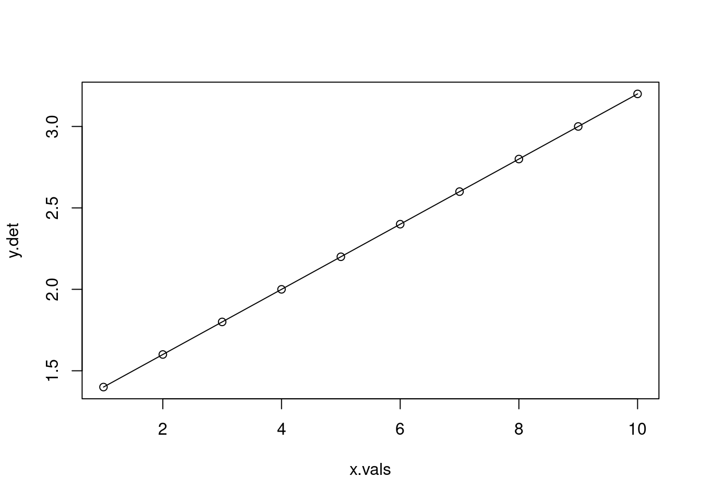
# Now let's add error
set.seed(27)
y.obs <- y.det + rnorm(n=length(x.vals))
plot(y.obs ~ x.vals, type="p")
lines(y.det ~ x.vals)
arrows(x0 = x.vals, x1=x.vals,
y0=y.det, y1=y.obs,
code=3,
angle=90,
length=0,
col="red")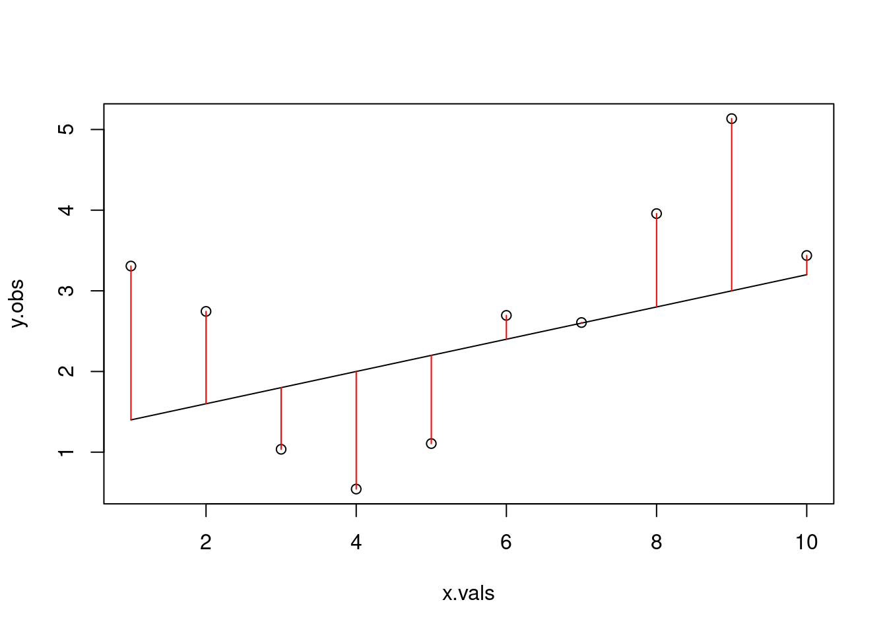
## [1] 14.89237# what if we tried a different line?
alt.line <- linear_function(m=0.05, x=x.vals, b=2)
plot(y.obs ~ x.vals)
lines(alt.line ~ x.vals)
arrows(x0 = x.vals, x1=x.vals,
y0=alt.line, y1=y.obs,
code=3,
angle=90,
length=0,
col="red")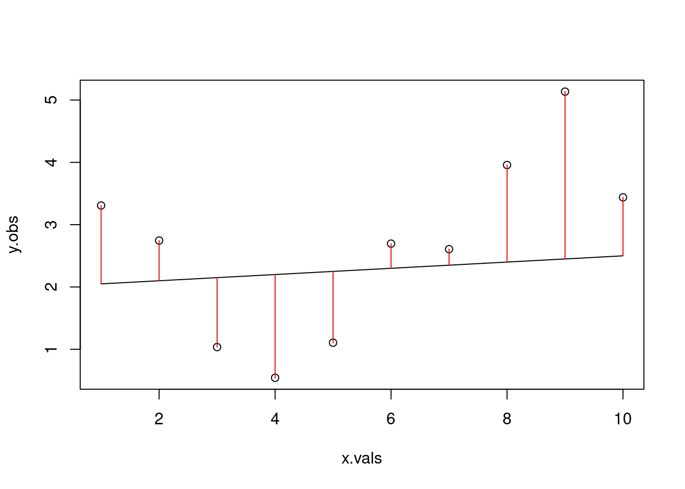
## [1] 18.02767Because we simulated based on the deterministic relationship but added in error, neither of these attempts is actually the line of best fit for our ‘observed’ data. We will use the function lm to fit a linear model to our simulated data which has a slope and intercept that minimize the sum of the squared residuals. The argument that the function needs is a formula, which we represent as our response variable over our predictor variable(s) using the tilde (i.e. y ~ x).
##
## Call:
## lm(formula = y.obs ~ x.vals)
##
## Residuals:
## Min 1Q Median 3Q Max
## -1.7480 -0.8622 -0.2009 0.8796 1.7493
##
## Coefficients:
## Estimate Std. Error t value Pr(>|t|)
## (Intercept) 1.3137 0.8860 1.483 0.176
## x.vals 0.2442 0.1428 1.710 0.126
##
## Residual standard error: 1.297 on 8 degrees of freedom
## Multiple R-squared: 0.2677, Adjusted R-squared: 0.1762
## F-statistic: 2.925 on 1 and 8 DF, p-value: 0.1256# From our "observed" data, the best line has slope=0.2442 and intercept=1.3137
# Let's double check this with our function and residuals
ols.line <- linear_function(m=0.2442, x=x.vals, b=1.3137)
plot(y.obs ~ x.vals)
lines(ols.line ~ x.vals)
arrows(x0 = x.vals, x1=x.vals,
y0=ols.line, y1=y.obs,
code=3,
angle=90,
length=0,
col="red")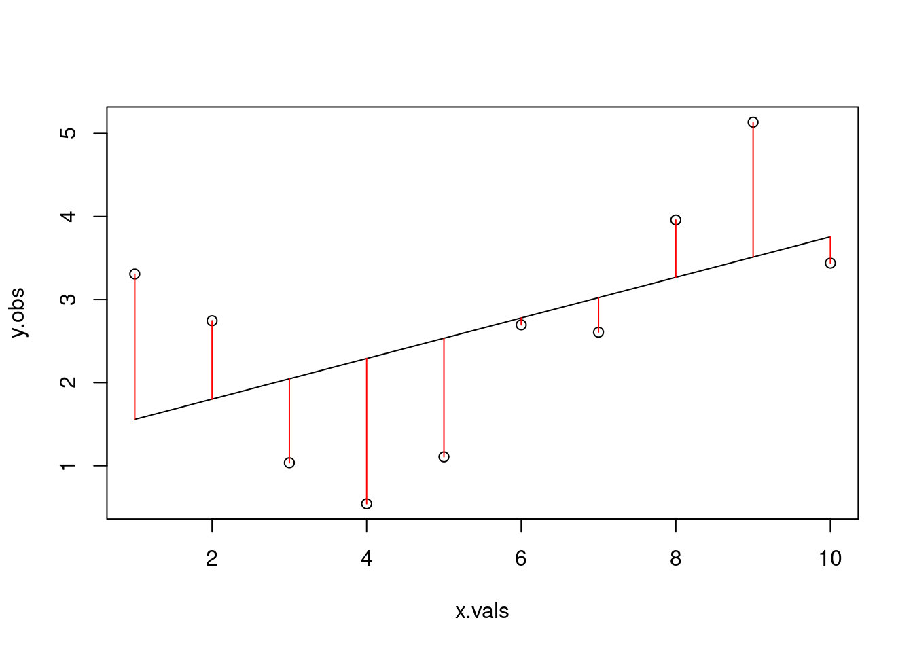
## [1] 13.45756## [1] 0.00062788316.4 Assumptions of linear models
It makes biological sense. This is the single most important assumption of your model. Your predictors must make sense in how they relate to your response variable, your underlying deterministic component is sensible, and you have a biological hypothesis or explanation for why you are using this model structure.
The effects are additive. In our simple model, the response variable is the sum of the intercept (\(b\)) and the slope (\(m\)) times the value of \(x\), not the product of the two, or \(m\) as a function of \(x\), etc. The effects are additive because they are separate and the sum of the effects results in the deterministic estimate.
Effects are linear. This does not mean that everything needs to be a straight line! But the function does need to be linear.
Errors (aka residuals, in this case) are independent. There are no shared patterns in the residuals, which might indicate that there is an issue with the observation process, or that there are other shared covariates that might explain patterns in the residuals.
Errors have equal variance (“homoscedasticity”).
Errors are normally distributed. The residuals of the model are not skewed, non-normal, all positive, etc.
6.5 Example: American pika
https://www.youtube.com/watch?v=XL64jtqDhBE

At the Niwot Ridge Long-Term Ecological Research (LTER) site in Colorado, researchers collected stress data on American pika across an elevational gradient. They sampled pika feces and represented stress as the concentration of glucocorticoid metabolites per gram of feces. At each site, they also recorded habitat characteristics. We will use this dataset as our example for linear models this week to ask: how does pika stress vary across an elevational gradient?
6.5.1 Specify our the model
Our response variable (\(y\)) is pika stress, and our predictor (\(x\)) is elevation. We can write this out as:
\[ y \sim Norm(\mu, \sigma) \\ \mu = \beta_0 + \beta_1*x\]
6.5.2 Read in the data
Not really a model fitting step, but we do need the data in our environment to work with! For this week’s class, we will use a different data structure than we have used before. Note that I do not actually recommend using proprietary software formats! But, you will likely encounter them in your research, and should know how to get them into R. Please download the data from https://tinyurl.com/pikastress. Make a note of where on your computer you downloaded the file to, because you will need the path to the file to read it into R.
To read a .xlsx file into R, you will need to install the package readxl using the function install.packages. Once the package is installed, there are two ways to use the functions contained in it: 1) by loading it with library("readxl"), or 2) using :: to call function names from the package. I prefer the latter because it helps you remember which functions come from which packages; this can be especially helpful when you have a script with functions from many packages.
Once it is successfully installed, we can read in our data. And remember, you only need to install a package once - after you have it installed, you only need to load it each time and not reinstall. Hence why this line of code is commented out in my script.
One of the things about a .xlsx that differs from a .csv file is that there can be multiple sheets contained within the workbook (i.e. when you are working with Excel, you might have multiple tabs). We can add an argument to the function call to specify which tab to read in. In this case, I happen to know that the stress data are tab 1 and metadata are tab 2, but most of the time you will have to inspect the file to figure out what you want to read in.
samples <- readxl::read_xlsx("~/Downloads/pika_stress (1).xlsx", sheet=1)
metadat <- readxl::read_xlsx("~/Downloads/pika_stress (1).xlsx", sheet=2)
# as usual, use head() or str() to get a sense of the data
str(samples)## tibble [109 × 11] (S3: tbl_df/tbl/data.frame)
## $ Date : POSIXct[1:109], format: "2018-06-08" "2018-06-08" ...
## $ Station : chr [1:109] "CG1" "CG2" "CG3" "WK3" ...
## $ UTM_Easting : num [1:109] 451373 451411 451462 449317 449342 ...
## $ UTM_Northing : num [1:109] 4432963 4432985 4432991 4434093 4434141 ...
## $ Notes : chr [1:109] NA NA NA NA ...
## $ Vial : num [1:109] 98 99 100 101 102 103 104 105 106 107 ...
## $ Concentration_pg_g: num [1:109] 11563 10629 10924 10414 13531 ...
## $ Plate : num [1:109] 1 1 1 1 1 1 1 1 1 1 ...
## $ Site : chr [1:109] "CG" "CG" "CG" "WK" ...
## $ Biweek : num [1:109] 1 1 1 1 1 1 1 1 1 1 ...
## $ Sex : chr [1:109] "M" "M" "M" "M" ...## tibble [20 × 32] (S3: tbl_df/tbl/data.frame)
## $ Date : POSIXct[1:20], format: "2019-07-10" "2019-07-10" ...
## $ Station : chr [1:20] "CG1" "CG2" "CG3" "CG4" ...
## $ UTM_Easting : num [1:20] 451373 451411 451462 451617 449927 ...
## $ UTM_Northing : num [1:20] 4432963 4432986 4432991 4433243 4435565 ...
## $ Cover_Rock : num [1:20] 77 68 65 50 60 45 55 50 40 60 ...
## $ Cover_Bare : num [1:20] 3 5 5 0 10 5 5 5 25 2 ...
## $ Cover_Grass : num [1:20] 5 15 14.5 15 3 10 15 22 17 16 ...
## $ Cover_Forb : num [1:20] 10 10 10 15 6 30 5 23 18 22 ...
## $ Cover_Shrub : num [1:20] 5 1 5 10 20 5 15 0 0 0 ...
## $ Cover_Tree : num [1:20] 0 1 0.5 10 1 5 5 0 0 0 ...
## $ Marmot_Seen : chr [1:20] "N" "N" "N" "N" ...
## $ Marmot_Heard : chr [1:20] "N" "N" "N" "N" ...
## $ Marmot_Scat : chr [1:20] "N" "N" "N" "N" ...
## $ Marmot_Dens : chr [1:20] "N" "N" "N" "N" ...
## $ Subsurf_Flow : chr [1:20] "N" "N" "N" "N" ...
## $ Downslope_Pooling : chr [1:20] "N" "N" "N" "N" ...
## $ Downslope_Riparian: chr [1:20] "N" "N" "N" "N" ...
## $ Upslope_Snow : chr [1:20] "N" "N" "N" "N" ...
## $ Skies : num [1:20] 1 1 1 1 1 1 1 2 2 1 ...
## $ Wind : num [1:20] 1 1 1 1 1 1 1 1 1 3 ...
## $ Temp_C : num [1:20] 60 60 60 60 60 60 65 65 65 60 ...
## $ Rock_Shade : num [1:20] 2 2 2 2 2 2 1 2 1 2 ...
## $ Largest_Rock_1st : num [1:20] 2 2 2 1.3 3 2 2.5 1 0.75 1 ...
## $ Largest_Rock_10th : num [1:20] 1.5 1.5 1.5 0.5 2 1.5 1.5 0.5 0.5 0.5 ...
## $ Deepest_Crevice : num [1:20] 2 2 1 1 1 3 3 2 2 1 ...
## $ Cover_Lichen : num [1:20] 3 2 3 2 1 1 1 3 1 3 ...
## $ Forage_Dist : num [1:20] 0.5 0 0 0 0 0 0 0 0 0 ...
## $ Aspect_Deg : num [1:20] 204 207 193 242 313 ...
## $ Elev_M : num [1:20] 3343 3353 3358 3407 3296 ...
## $ Aspect_Dir : chr [1:20] "SW" "SW" "S" "SW" ...
## $ Notes : chr [1:20] "Heard 1 pika upslope on arrival (possible adult)" NA NA "Fresh hay seen in haypile. 1/2 & 1/2 grasses and forbs near plot" ...
## $ Notes_Snow : chr [1:20] NA NA NA NA ...6.5.3 Data cleaning and prepping covariates
Now, you may have noticed that the samples data.frame has the pika stress data, but no column for elevation. But, the metadata data.frame has elevation data. Each of them has a column called Station, which we can use to match the records and associate the elevation at each station with each sample This is pretty typical with data analysis - a large portion of your time will be spent getting data into the format you need for your analyses. To find the elevation of each station and add it as a variable to our samples data object, we will use the function match. Sidenote: if you are tidyverse-inclined, what we are going for is something akin to left_join.
# Match returns the index (i.e. position in the vector) where values line up
station_indices <- match(samples$Station, metadat$Station)
# To get a better sense of what is going on here, let's look at the vector
station_indices## [1] 1 2 3 14 15 16 17 18 19 9 11 12 5 6 7 17 10 4 1 3 8 13 14 16 17
## [26] 19 20 10 11 12 8 13 16 17 18 19 20 9 10 12 1 2 4 8 13 14 15 16 17 18
## [51] 19 20 9 10 11 12 1 2 3 5 6 7 8 13 14 15 16 17 18 19 20 9 10 11 12
## [76] 8 13 14 16 17 18 19 20 9 10 11 12 1 2 3 4 5 6 7 1 2 3 4 8 13
## [101] 14 16 17 18 19 20 9 10 11# Note that it has length 109, which is the same number of rows in samples
# It also only has values up to 20, which is the number of rows in metadat
# The fourth entry in the vector is 14, indicating that the fourth element of
# samples$Station is the 14th element in metadat$station, which we can confirm
# is true.
samples$Station[4]## [1] "WK3"## [1] "WK3"# Now that we have this vector of indices, we can subset metadat by it to return
# the elevation of the station associated with each fecal sample; because multiple
# fecal samples are collected at the same stations, elevations will be repeated
elevations <- metadat$Elev_M[station_indices]
# Now we have a vector of elevations associated with each fecal sample
# Let's also create a vector that pulls out just the pika stress data
stress <- samples$Concentration_pg_g6.5.4 Plot the data
I think it’s generally a good idea to plot your data as a first step before running your analyses to make sure you understand what the structure of your data is. You may encounter (outdated) advice that you should never, ever look at your data before fitting your model. The reasons behind this advice are primarily that, in theory, you collected the data to answer a specific question and had a model in mind already when you gathered the data, so inspecting it first could lead you to change your model or bias you in some direction, or that you are not really testing a hypothesis anymore because you’ve done some data exploration, so it could lead to issues of irreproducibility or overfitting your model to the data. The reason I think this advice is not very good is because you are at a much greater risk of fitting a model that does not represent your data if you do not know what the structure of your data (i.e. if you thought your data were normally distributed, but are actually heavily skewed or seem to be drawn from a different distribution entirely). So, first we will generate a quick plot to check that everything matches our expectations of what measures of niche breadth and conspecific density should look like. Especially when working with other peoples’ data.
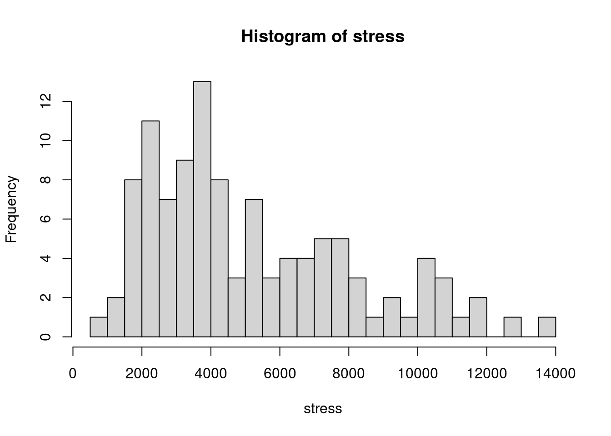
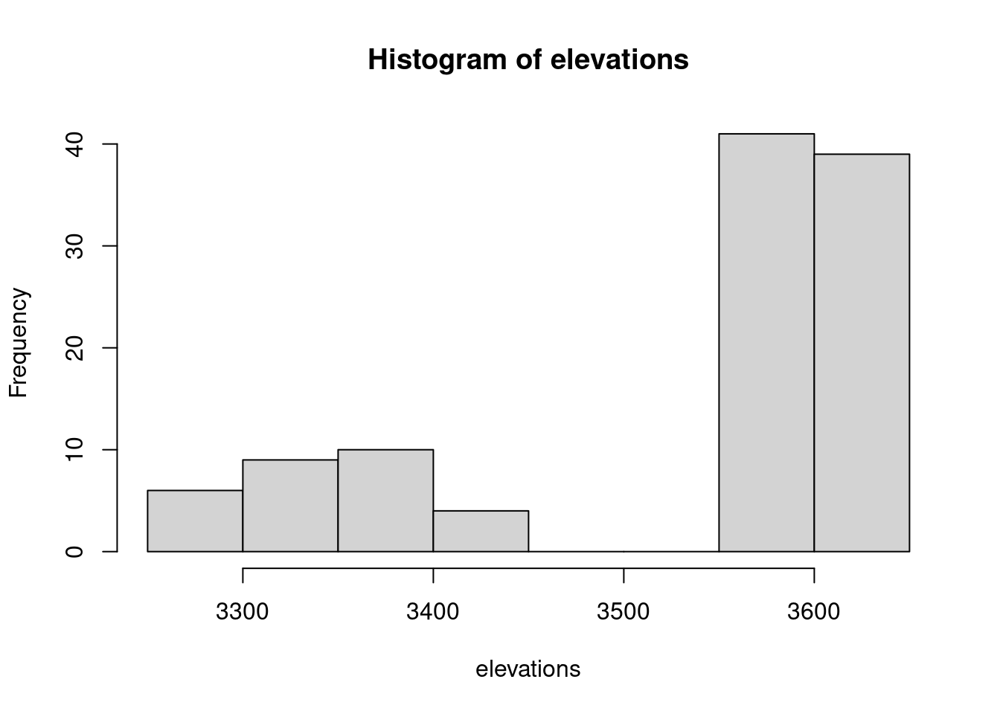
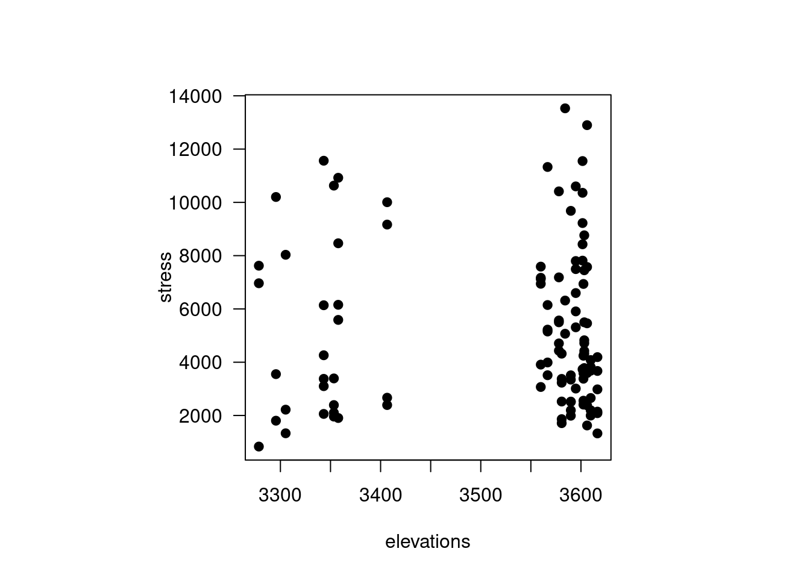
6.5.5 Fit the model
When fitting a linear model in R, the function we will use is lm. We pass to it the formula, which is our response variable over (~) our predictor. When running models, it is a good idea to save them to an object so you can then work with your model object. And that’s it, the model is fit!
6.5.6 Evaluate model fit

Now that we have fit our model, we need to evaluate if it is actually a good model for our data. There are default diagnostic plots in R for general linear models which can help us with this.
First is the residuals vs fitted plot. Residuals, remember, are the errors or the difference between the observed values and the fitted (predicted) values (i.e. what falls along the line). The residuals vs fitted plot helps us check if our errors vary with magnitude, i.e. do we have larger errors for larger predicted values? If we see a trend here, that means our model may only be good over some ranges of values. In this example, maybe we are pretty good at estimating how stressed a low to moderately stressed pika is, but when they get really, really stressed our estimates get much farther off. If this relationship is relatively flat, that means we should not be concerned about the model estimates being biased at certain range of our observed data.
Next is the Normal Q-Q plot. Remember that one of the assumptions of linear models is that the error are normally distributed. If the errors are normally distributed, they should fall along the line matching up with theoretical quantiles. This is just a visual check, so it is not really diagnostic, but can give us a good gut check on whether or nor the errors are normally distributed. There seems to be a fairly long tail in the lower end that deviates from the assumption, which we might have anticipated from our histogram of the response variable.
The third default diagnostic plot is Scale-Location, which helps us understand if our errors have equal variance (another assumption of linear models: homoscedasticity). Again, a relatively flat line here passes the gut check that model assumptions are met.
The final visual diagnostic check is residuals versus leverage. If data points have large leverage, you can interpret this as meaning that the estimates would change quite a bit if they were removed from the dataset before fitting the model. If particularly large, or particularly small, data points have high leverage, they would stand out in this plot and could indicate issues with the model fit or data.
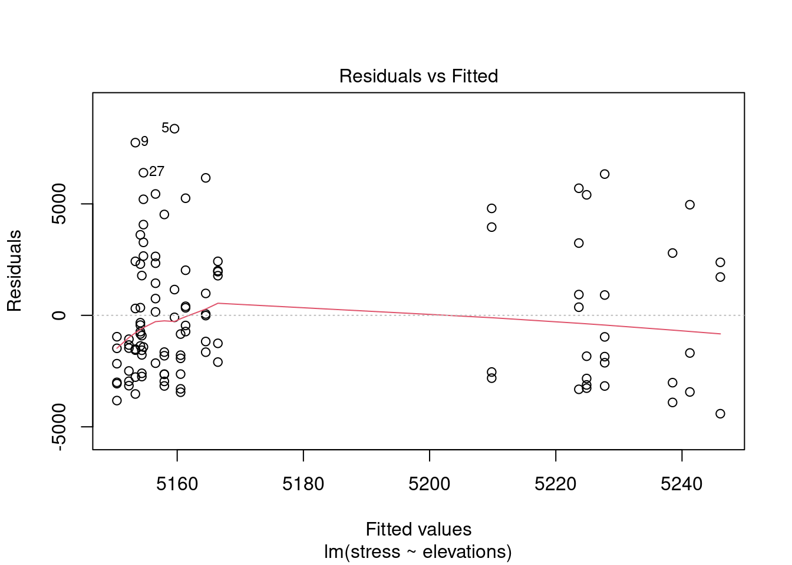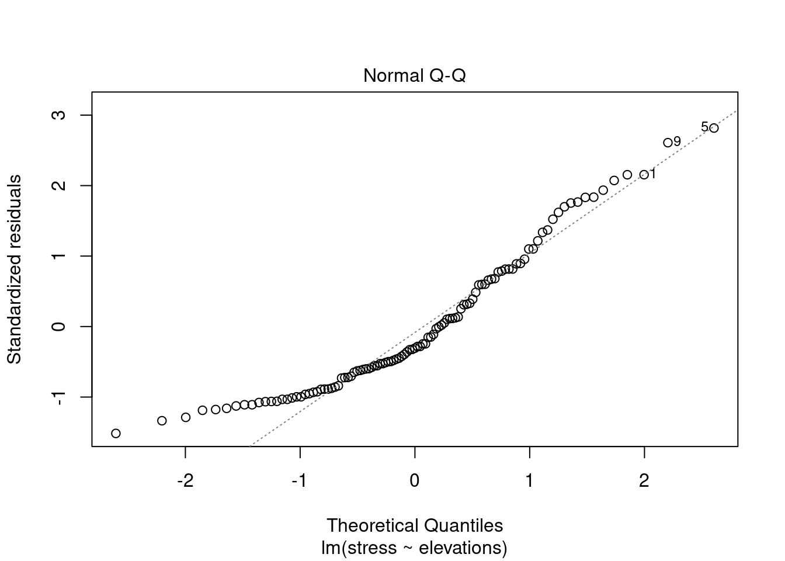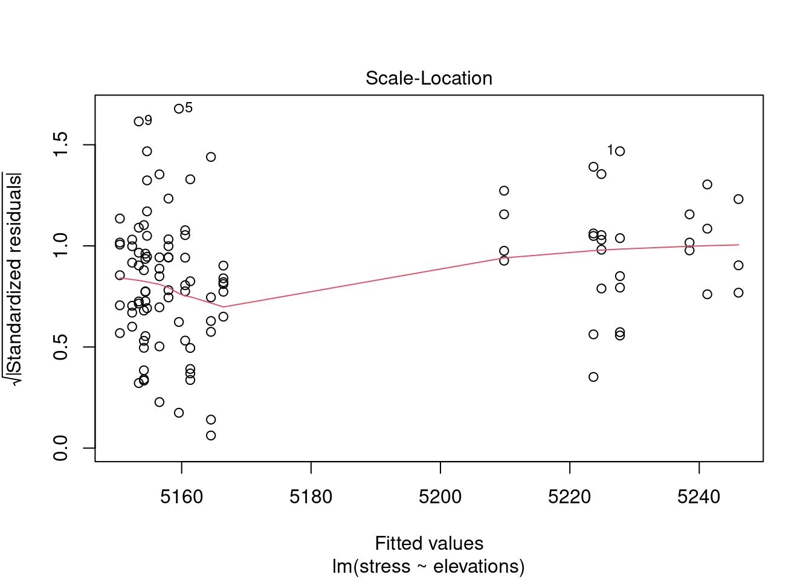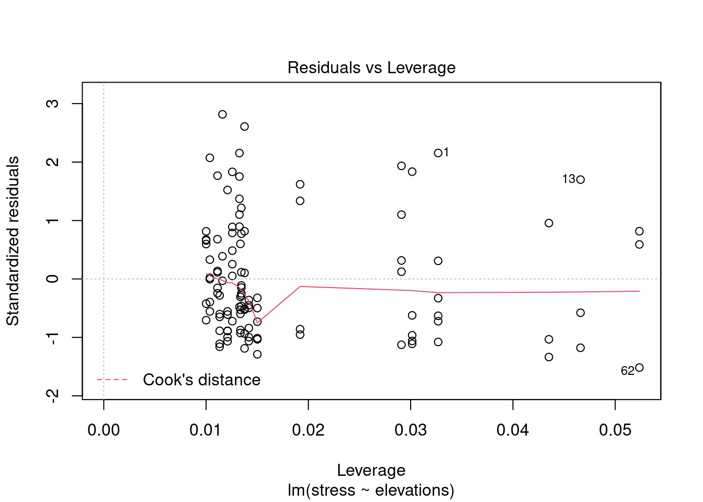
6.5.7 Interpret model output
Assuming we are happy with our model fit, we can move on to interpreting the output. We can use the summary function for this. In the output, the first thing we see is the call, which repeats back our model specification. There is also a summary of the residuals in terms of quantiles; because we did not standardize or scale our data, these are in the units of the response variable.
Next, and possibly most important for our interpretation of the model, are the coefficients. The estimate is the point estimate. The estimate for the intercept here is 6173.68, meaning that at 0 elevation, that is the predicted pika stress. With every one unit increase in elevation, we would expect an estimated -0.2829 unit decrease in pika stress. The Std.Error column is the standard error of the estimate, i.e. how large are the error bars surrounding that estimate. The t-value is what we use to lookup the p-value (here, labeled as Pr(>|t|)).
Lastly, we have the R-squared which tells us how much of the variance in our response variable (stress) is explained by our predictor variable(s) (in this case, just elevation). The adjusted R-squared accounts for the number of variables included in the model.
##
## Call:
## lm(formula = stress ~ elevations)
##
## Residuals:
## Min 1Q Median 3Q Max
## -4412.0 -2496.0 -910.7 2002.8 8371.0
##
## Coefficients:
## Estimate Std. Error t value Pr(>|t|)
## (Intercept) 6173.6870 8868.8314 0.696 0.488
## elevations -0.2829 2.5143 -0.113 0.911
##
## Residual standard error: 2989 on 107 degrees of freedom
## Multiple R-squared: 0.0001183, Adjusted R-squared: -0.009226
## F-statistic: 0.01266 on 1 and 107 DF, p-value: 0.9106For this particular model, even though the model fit was acceptable, the R-squared was very, very low and the the effect of elevation was not significant (using an \(\alpha\) of 0.05). How we would interpret this is that our model was fine, but we cannot reject the null hypothesis that there is no effect of elevation on stress. We might write this up something like “Our model explained little to no variance in pika stress response (R^2 = 0.0001) and we found no effect of elevation (mean = -0.28, SE = 2.51, p = 0.91) on pika stress.”
6.5.8 Make predictions
Normally, if we had a model that was this bad at explaining our response, we would probably stop there. But, because this is just an example dataset for class, we will go through the steps of making predictions based on our model and plotting the output with a 95% confidence interval around the estimates.
First, let’s predict our line of best fit. We can use the predict function to predict estimated y-values across a range of x-values. We will choose something sensible in the range of data we input to the model.
## Min. 1st Qu. Median Mean 3rd Qu. Max.
## 3278 3407 3584 3526 3602 3616xvals <- seq(3250, 3750, 1)
p1 <- predict(mod.stress, newdata = data.frame(elevations=xvals))
# Plot the raw data
par(pty="s", las=1)
plot(stress ~ elevations, pch=19)
lines(p1 ~ xvals, type="l") # add the predicted line of best fit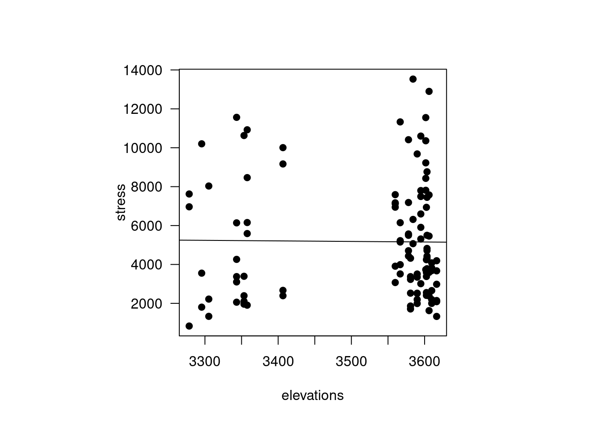
This is just the line of best fit, and we also want to know what the confidence interval is around that line across the range of values we are interested in. To do this, we can use the argument se.fit=T in the function call. We will also introduce the polygon function to add polygons onto our plots representing our confidence intervals.
p.conf <- predict(mod.stress, newdata = data.frame(elevations=xvals),
se.fit = T)
ci.up <- p.conf$fit + p.conf$se.fit*1.96
ci.low <- p.conf$fit - p.conf$se.fit*1.96
par(pty="s", las=1)
plot(stress ~ elevations, pch=19)
lines(p1 ~ xvals, lwd=2)
polygon(x=c(xvals, rev(xvals)),
y=c(ci.low, ci.up),
col="#a0056588",
border="#a0056588")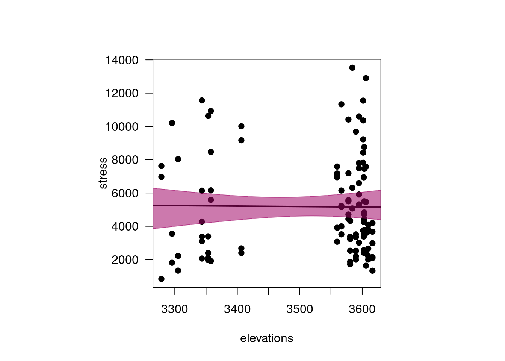